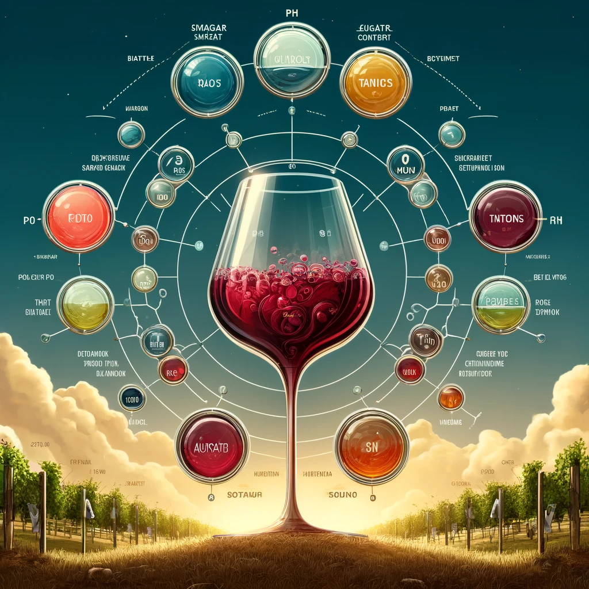
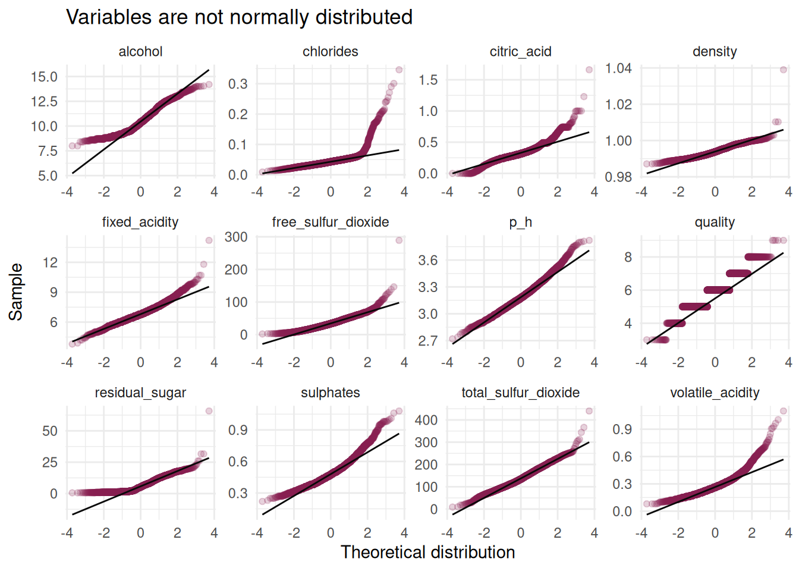
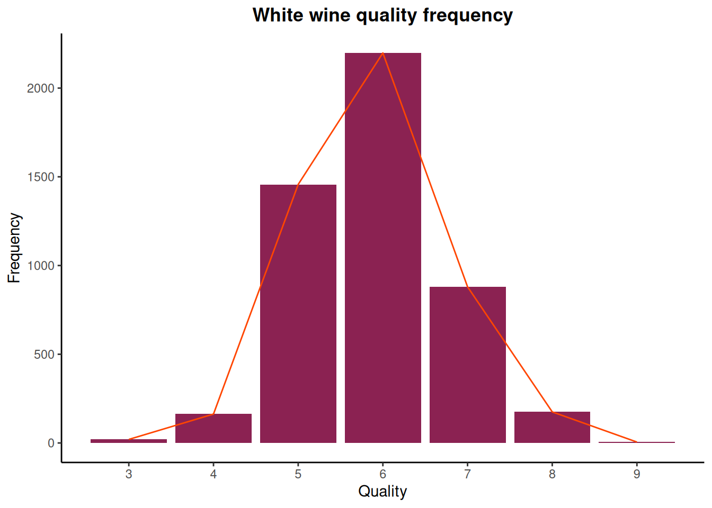
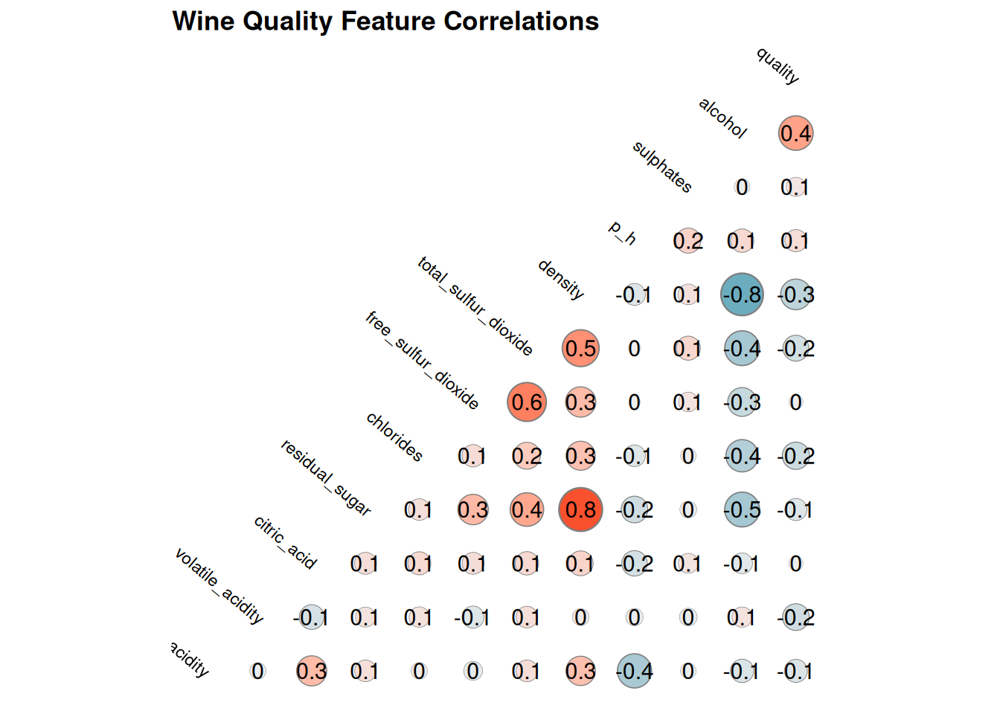

library(pacman)
p_load(tidyverse, tidymodels, gt, kableExtra)Introduction

Wine appreciation is an art form enjoyed by many. However, beyond the subjective experience of taste, there lies a science behind wine quality. Winemakers strive to produce exceptional vintages by carefully controlling various factors during the production process. This project explores the fascinating world of wine quality, specifically focusing on the ability to predict it based on measurable chemical properties.
Objective
This project aims to develop a model that can estimate the quality of a wine using its chemical composition. By analyzing features such as acidity, residual sugar content, and sulfur dioxide levels, we aim to unlock valuable insights into the factors that contribute to a superior wine. This model can potentially benefit wine producers, retailers, and even consumers seeking a more informed approach to wine selection.
Data
Data Source
The data for this project was obtained from the UCI Machine Learning Repository, a renowned resource for publicly available datasets. This repository offers a wealth of datasets for various machine learning tasks, making it a valuable resource for researchers and data scientists.
The specific dataset we utilized is titled Wine Quality and focuses on Portuguese Vinho Verde wines.

Vinho Verde is a light-bodied wine known for its crisp acidity and refreshing taste. The dataset encompasses two separate datasets, one for red wines and another for white wines. For this project, we chose to focus on the white wine dataset.
Data Definition
The dataset contains more than 4500 wine samples, each characterized by 11 chemical properties measured during the winemaking process. These features include factors like:
Fixed Acidity: Level of acidity due to tartaric acid.
Volatile Acidity: Level of acidity due to volatile acids like acetic acid.
Alcohol: Percentage of alcohol content by volume
Residual Sugar: Amount of remaining sugar after fermentation.
pH: Measure of acidity on a logarithmic scale.
Citric Acid: Minute quantity naturally present in grapes. Winemakers may add small amounts to increase tartness and prevent haze formation.
Chlorides: Level of chloride salts that can influence a wine’s saltiness and bitterness.
Free Sulfur Dioxide: Amount of unbound sulfur dioxide (SO2) gas, a preservative commonly used to prevent spoilage by bacteria and oxidation.
Total Sulfur Dioxide: The total level of SO2 gas, including both free and bound forms.
Density: The relative density of the wine compared to water. It can be an indicator of the wine’s alcohol content and sugar level.
Sulphates: The level of sulfate salts, which can influence a wine’s overall mouthfeel and perception of bitterness.
Quality: This is the target variable, a score between 0 and 10 representing the perceived sensory quality of the wine according to human experts. This score serves as the target variable for our machine learning model, allowing us to predict the quality of a new wine based on its chemical makeup.
Setting Up the Analysis Environment
To begin our analysis, we’ll import essential libraries using the pacman package for efficient dependency management.
Exploring the Data
Next, we’ll import the wine quality dataset and get a glimpse of its contents. Here, we directly use the janitor package because it’s only needed for this specific step. This approach avoids unnecessary library loading throughout the document.
wine_tbl <- read_delim("data/winequality-white.csv", delim = ";") |>
janitor::clean_names()Data Inspection: A Crucial Step
A crucial step in data analysis, after defining our goals and collecting data, is to inspect its quality and structure. This involves examining the data to identify potential issues like missing values, inconsistencies, or formatting errors. Table 1 below gives a preview of our data.
head(wine_tbl) |>
gt() |>
cols_label(
fixed_acidity = "Fixed",
volatile_acidity = "Volatile",
citric_acid = "Citric Acid",
residual_sugar = "Residual Sugar",
chlorides = "Chlorides",
free_sulfur_dioxide = "Free",
total_sulfur_dioxide = "Total",
density = "Density",
p_h = "pH",
sulphates = "Sulphates",
alcohol = "Alcohol",
quality = "Quality"
) |>
tab_spanner(
label = "Acidity",
columns = contains("acidity")
) |>
tab_spanner(
label = "Sulfur dioxide",
columns = contains("dioxide")
) |>
tab_header(
title = "Data Preview: Wine Quality for White Wine"
) |>
opt_stylize(
style = 3,
color = "gray"
) |>
as_raw_html()| Data Preview: Wine Quality for White Wine | |||||||||||
|---|---|---|---|---|---|---|---|---|---|---|---|
| Fixed | Volatile | Free | Total | ||||||||
glimpse(wine_tbl)Rows: 4,898
Columns: 12
$ fixed_acidity <dbl> 7.0, 6.3, 8.1, 7.2, 7.2, 8.1, 6.2, 7.0, 6.3, 8.1,…
$ volatile_acidity <dbl> 0.27, 0.30, 0.28, 0.23, 0.23, 0.28, 0.32, 0.27, 0…
$ citric_acid <dbl> 0.36, 0.34, 0.40, 0.32, 0.32, 0.40, 0.16, 0.36, 0…
$ residual_sugar <dbl> 20.70, 1.60, 6.90, 8.50, 8.50, 6.90, 7.00, 20.70,…
$ chlorides <dbl> 0.045, 0.049, 0.050, 0.058, 0.058, 0.050, 0.045, …
$ free_sulfur_dioxide <dbl> 45, 14, 30, 47, 47, 30, 30, 45, 14, 28, 11, 17, 1…
$ total_sulfur_dioxide <dbl> 170, 132, 97, 186, 186, 97, 136, 170, 132, 129, 6…
$ density <dbl> 1.0010, 0.9940, 0.9951, 0.9956, 0.9956, 0.9951, 0…
$ p_h <dbl> 3.00, 3.30, 3.26, 3.19, 3.19, 3.26, 3.18, 3.00, 3…
$ sulphates <dbl> 0.45, 0.49, 0.44, 0.40, 0.40, 0.44, 0.47, 0.45, 0…
$ alcohol <dbl> 8.8, 9.5, 10.1, 9.9, 9.9, 10.1, 9.6, 8.8, 9.5, 11…
$ quality <dbl> 6, 6, 6, 6, 6, 6, 6, 6, 6, 6, 5, 5, 5, 7, 5, 7, 6…Using the glimpse function we can get a high-level overview of the wine quality data and the data follows the expected structure in the data definition. We have 4898 rows and 12 columns. All the columns are numeric variables.
skimr::skim(wine_tbl) |>
select(-skim_type) |>
gt() |>
cols_label(
skim_variable = "Variable",
n_missing = "Missing Value",
complete_rate = "Complete",
numeric.mean = "Mean",
numeric.sd = "Standard Deviation",
numeric.p0 = "Min",
numeric.p25 = "1st Percentile",
numeric.p50 = "Median",
numeric.p75 = "3rd Percentile",
numeric.p100 = "Max",
numeric.hist = "Histogram"
) |>
tab_header(
title = "White Wine Quality Descriptive Statistics"
) |>
opt_stylize(
style = 3,
color = "gray"
) |>
as_raw_html()| White Wine Quality Descriptive Statistics | ||||||||||
|---|---|---|---|---|---|---|---|---|---|---|
| Variable | Missing Value | Complete | Mean | Standard Deviation | Min | 1st Percentile | Median | 3rd Percentile | Max | Histogram |
?@tbl-summary summarizes the key characteristics of our data. It reveals:
No Missing Values: There are no missing data points, ensuring a complete dataset for our analysis.
Descriptive Statistics: ?@tbl-summary presents various descriptive statistics for each variable. This includes the minimum and maximum values highlighting the data’s range. Additionally, the first and third quartile provides an insight of the distribution of values in the data. Finally the mean and standard deviation indicate the average and spread of each variables relative to their mean.
Outliers: Initial exploration of the data suggests the presence of potential outliers in several features. Specifically, the maximum values for variables
fixed_acidity,volatile_acidity,citric_acid,residual_sugar,chlorides,free_sulphur_dioxide, andtotal_sulfur_dioxideseems deviate significantly from the rest of the distribution. To confirm these observations statistically, we can employ a Grubbs’ test. This test helps us determine if these maximum values are likely outliers within the dataset. The Grubbs’ test is particularly useful for identifying single outliers in a dataset that is assumed to be normally distributed.
Dealing with Outliers
Grubbs’ test assumes that the variables being tested follows a normal distribution. Before undertaking Grubbs’ test, we use the shapiro.wilk() function to test normality and create a quantile-quantile plot to validate our test finding.
normality_test <- wine_tbl |>
map(~tidy(shapiro.test(.))) |>
bind_rows(.id = "variable") |>
select(-method) |>
janitor::clean_names() |>
mutate(
variable = str_to_title(str_replace_all(variable, "_", " "))
)
actual_colnames <- colnames(normality_test)
desired_colnames <- str_to_title(names(normality_test))
names(desired_colnames) <- actual_colnames
gt(normality_test) |>
cols_label(.list = desired_colnames) |>
tab_header(
title = "Shapiro-wilk Normality Test"
) |>
opt_stylize(
style = 3,
color = "gray"
) |>
as_raw_html()| Shapiro-wilk Normality Test | ||
|---|---|---|
| Variable | Statistic | P_value |
wine_tbl |>
pivot_longer(
cols = everything(),
names_to = "variable",
values_to = "value"
) |>
ggplot(aes(sample = value)) +
geom_qq(alpha = .2, col = "violetred4") +
geom_qq_line(col = "gray3") +
facet_wrap(~variable, scales = "free") +
labs(
x = "Theoretical distribution",
y = "Sample",
title = "Variables are not normally distributed"
) +
theme_minimal()

Table 2 shows all the ## Response Variable (Quality)
wine_tbl |>
ggplot(aes(quality)) +
geom_bar(fill = "violetred4") +
geom_density(
stat = "count",
col = "orangered"
) +
scale_x_continuous(
breaks = seq(1, 10, 1)
) +
labs(
x = "Quality",
y = "Frequency",
title = "White wine quality frequency"
) +
theme_classic() +
theme(
plot.title = element_text(hjust = .5, face = "bold")
)

The distribution of wine ratings in Figure 2 shows a range between 3 and 9. This aligns with the finding in ?@tbl-summary that the median wine quality score is 6. This shows that most wines in the dataset fall around the central value.
Correlation Plot
GGally::ggcorr(
wine_tbl,
method = "pairwise",
geom = "circle",
palette = "Spectral",
max_size = 10,
min_size = 2,
label = TRUE,
size = 3,
angle = -40,
hjust = .95
) +
ggtitle("Wine Quality Feature Correlations") +
theme(
legend.position = "none",
plot.title = element_text(face = "bold")
)

Figure 3 shows some noteworthy relationships between the wine quality variables. Here are the key observations:
Alcohol and Density: A strong negative correlation exists between alcohol content and density. This implies that as the alcohol level increases, the density of the wine tends to decreases.
Total Sulfur Dioxide and Free Sulfur Dioxide: A high positive correlation is observed between total sulfur dioxide and free sulfur dioxide. This indicates that wines with higher total sulfur dioxide content also tend to have higher levels of unbound free sulfur dioxide.
a_lab <- with(wine_tbl, round(cor(alcohol, density), 1))
b_lab <- with(wine_tbl, round(cor(total_sulfur_dioxide, free_sulfur_dioxide), 1))
a <- wine_tbl |>
ggplot(aes(alcohol, density)) +
geom_jitter(
width = 3,
alpha = .6
) +
geom_smooth(
method = "lm",
se = FALSE,
col = "orangered3"
) +
geom_label(
aes(x = 13, y = 1.02),
label = a_lab,
col = "white",
fill = "violtered"
) +
labs(
x = "Alcohol",
y = "Density",
title = "Wine density decreases as alcohol level increases"
)
b <- wine_tbl |>
ggplot(aes(total_sulfur_dioxide, free_sulfur_dioxide)) +
geom_jitter(
width = 3,
alpha = .6
) +
geom_smooth(
method = "lm",
se = FALSE,
col = "red"
) +
geom_label(
aes(x = 13, y = 1.02),
label = a_lab,
col = "white",
fill = "violtered"
)- Residual Sugar and Density: As shown in Figure 3 We can see some interesting relationships between the variables, alcohol and pH have high negative correlation, , while total and free sulfur have high positive correlation. We can also notice a high positive correlation between residual sugar and density. Overall there’s a fair distribution of correlation across all the variables ranging from as low as ± 0.1 to ± 0.8